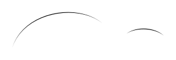
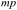
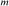
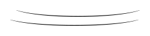
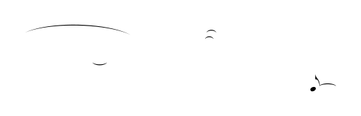

candidate #87
x=334.412
Every MusicSymbolCandidate inside the free-stem endpoint search radius is shown, including candidates rejected by geometry before PCA. The SVG is the exact smooth candidate geometry converted to contours for recognition.
| # | Candidate | Stem | Endpoint distance | PCA candidates | Verdict |
|---|---|---|---|---|---|
| 001 | candidate #87 | Down x=334.412 | 0 sp | — | rejected before PCA: width 0sp < 0.12sp |
| # | Candidate | Stem | Endpoint distance | PCA candidates | Verdict |
|---|---|---|---|---|---|
| 002 |  candidate #432 | Up x=576.486 | 0 sp | — | rejected before PCA: width 0sp < 0.12sp |
| # | Candidate | Stem | Endpoint distance | PCA candidates | Verdict |
|---|---|---|---|---|---|
| 003 |  candidate #484 | Down x=112.836 | 0 sp | — | rejected before PCA: width 0sp < 0.12sp |
| 004 |  candidate #494 | Down x=212.807 | 0.87 sp | 1/16 Down: conf=0.214 d=3.681 1/16 Up: conf=0.206 d=3.864 1/8 Up: conf=0.142 d=6.018 | rejected by PCA |
| 005 |  candidate #498 | Down x=212.807 | 0 sp | 1/8 Down: conf=0.961 d=0.04 1/8 Up: conf=0.723 d=0.384 1/16 Down: conf=0.205 d=3.882 1/16 Up: conf=0.197 d=4.073 | accepted: 1/8 Down (contour 1/7) |
| 006 |  candidate #499 | Down x=212.807 | 0 sp | — | rejected before PCA: width 0sp < 0.12sp |
| 007 |  candidate #498 | Down x=244.2 | 0.824 sp | 1/8 Down: conf=0.961 d=0.04 1/8 Up: conf=0.723 d=0.384 1/16 Down: conf=0.205 d=3.882 1/16 Up: conf=0.197 d=4.073 | accepted: 1/8 Down (contour 1/7) |
| 008 |  candidate #505 | Down x=244.2 | 0 sp | — | rejected before PCA: width 0sp < 0.12sp |
| # | Candidate | Stem | Endpoint distance | PCA candidates | Verdict |
|---|---|---|---|---|---|
| 009 |  candidate #544 | Down x=310.408 | 0 sp | — | rejected before PCA: width 0sp < 0.12sp |
| 010 |  candidate #546 | Down x=332.036 | 0 sp | — | rejected before PCA: width 0sp < 0.12sp |
| # | Candidate | Stem | Endpoint distance | PCA candidates | Verdict |
|---|---|---|---|---|---|
| 011 |  candidate #585 | Up x=504.051 | 0 sp | — | rejected before PCA: width 0sp < 0.12sp |
| 012 |  candidate #586 | Up x=504.051 | 0.672 sp | 1/8 Up: conf=0.333 d=2.003 1/8 Down: conf=0.323 d=2.096 1/16 Down: conf=0.161 d=5.203 1/16 Up: conf=0.158 d=5.346 | rejected by PCA |
| 013 |  candidate #586 | Up x=574.907 | 0.479 sp | 1/8 Up: conf=0.333 d=2.003 1/8 Down: conf=0.323 d=2.096 1/16 Down: conf=0.161 d=5.203 1/16 Up: conf=0.158 d=5.346 | rejected by PCA |
| 014 |  candidate #588 | Up x=574.907 | 0 sp | — | rejected before PCA: width 0sp < 0.12sp |
| # | Candidate | Stem | Endpoint distance | PCA candidates | Verdict |
|---|---|---|---|---|---|
| 015 |  candidate #649 | Down x=274.795 | 0 sp | — | rejected before PCA: width 0sp < 0.12sp |
| # | Candidate | Stem | Endpoint distance | PCA candidates | Verdict |
|---|---|---|---|---|---|
| 016 |  candidate #706 | Down x=569.181 | 0 sp | — | rejected before PCA: width 0sp < 0.12sp |
| # | Candidate | Stem | Endpoint distance | PCA candidates | Verdict |
|---|---|---|---|---|---|
| 017 |  candidate #130 | Down x=334.412 | 0.805 sp | 1/16 Up: conf=0.288 d=2.474 1/16 Down: conf=0.288 d=2.476 1/8 Down: conf=0.144 d=5.945 | rejected by PCA |
| 018 |  candidate #132 | Down x=334.412 | 0.498 sp | 1/16 Up: conf=0.184 d=4.444 1/16 Down: conf=0.180 d=4.56 1/8 Down: conf=0.162 d=5.161 | rejected by PCA |
| 019 |  candidate #136 | Down x=334.412 | 0 sp | — | rejected before PCA: width 0sp < 0.12sp |
| 020 |  candidate #137 | Down x=334.412 | 0.596 sp | 1/16 Up: conf=0.307 d=2.254 1/16 Down: conf=0.307 d=2.261 1/8 Down: conf=0.152 d=5.569 | rejected by PCA |
| 021 |  candidate #138 | Down x=334.412 | 0.596 sp | 1/16 Up: conf=0.157 d=5.351 1/16 Down: conf=0.156 d=5.394 1/8 Down: conf=0.129 d=6.754 | rejected by PCA |
| 022 |  candidate #170 | Down x=334.412 | 1.005 sp | 1/8 Up: conf=0.309 d=2.233 1/8 Down: conf=0.267 d=2.752 1/16 Up: conf=0.201 d=3.967 | rejected by PCA |
| # | Candidate | Stem | Endpoint distance | PCA candidates | Verdict |
|---|---|---|---|---|---|
| 023 |  candidate #256 | Down x=556.514 | 0 sp | 1/8 Down: conf=0.961 d=0.04 1/8 Up: conf=0.723 d=0.384 1/16 Down: conf=0.205 d=3.882 1/16 Up: conf=0.197 d=4.073 | accepted: 1/8 Down (contour 1/2) |
| 024 |  candidate #257 | Down x=556.514 | 0 sp | — | rejected before PCA: width 0sp < 0.12sp |
| # | Candidate | Stem | Endpoint distance | PCA candidates | Verdict |
|---|---|---|---|---|---|
| 025 |  candidate #515 | Down x=112.836 | 0 sp | — | rejected before PCA: width 0sp < 0.12sp |
| 026 |  candidate #520 | Down x=199.62 | 0 sp | — | rejected before PCA: width 0sp < 0.12sp |
| # | Candidate | Stem | Endpoint distance | PCA candidates | Verdict |
|---|---|---|---|---|---|
| 027 |  candidate #566 | Down x=310.408 | 0 sp | — | rejected before PCA: width 0sp < 0.12sp |
| 028 |  candidate #577 | Down x=395.082 | 0 sp | — | rejected before PCA: width 0sp < 0.12sp |
| # | Candidate | Stem | Endpoint distance | PCA candidates | Verdict |
|---|---|---|---|---|---|
| 029 |  candidate #596 | Up x=539.398 | 0 sp | 1/8 Down: conf=0.405 d=1.469 1/8 Up: conf=0.349 d=1.867 1/16 Up: conf=0.232 d=3.307 1/16 Down: conf=0.227 d=3.406 | rejected by PCA |
| 030 | candidate #598 | Up x=539.398 | 0 sp | 1/8 Up: conf=0.789 d=0.267 1/8 Down: conf=0.740 d=0.352 1/16 Down: conf=0.220 d=3.552 1/16 Up: conf=0.217 d=3.607 | rejected by PCA |
| 031 |  candidate #600 | Up x=539.398 | 0 sp | — | rejected before PCA: width 0sp < 0.12sp |
| 032 |  candidate #596 | Up x=574.907 | 0.937 sp | 1/8 Down: conf=0.405 d=1.469 1/8 Up: conf=0.349 d=1.867 1/16 Up: conf=0.232 d=3.307 1/16 Down: conf=0.227 d=3.406 | rejected by PCA |
| 033 |  candidate #603 | Up x=574.907 | 0 sp | — | rejected before PCA: width 0sp < 0.12sp |
| # | Candidate | Stem | Endpoint distance | PCA candidates | Verdict |
|---|---|---|---|---|---|
| 034 |  candidate #658 | Up x=124.101 | 0 sp | — | rejected before PCA: width 0sp < 0.12sp |
| # | Candidate | Stem | Endpoint distance | PCA candidates | Verdict |
|---|---|---|---|---|---|
| 035 |  candidate #713 | Up x=416.105 | 0 sp | — | rejected before PCA: width 0sp < 0.12sp |
| # | Candidate | Stem | Endpoint distance | PCA candidates | Verdict |
|---|---|---|---|---|---|
| 036 |  candidate #855 | Up x=123.939 | 0 sp | — | rejected before PCA: width 0sp < 0.12sp |
| 037 |  candidate #862 | Up x=410.671 | 0 sp | — | rejected before PCA: width 0sp < 0.12sp |
{kind=link}
{kind=link}
{kind=link}
{kind=link}
{kind=link}
{kind=link}